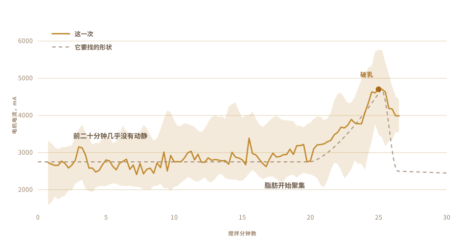

01
我只吃过，没做过
我认得的酥油来自村子。装在回收的玻璃罐里，做它的人用同一种方法做了太久，久到那里没人把它当成一门手艺。
它和商店里铁罐装的味道不一样。
而我一批也没做过。我不知道牛奶要放多久，酸奶要多凉，也不知道锅里到了火候该是什么声音。
02
它从酸奶开始，不是从奶油开始
工业酥油大多从奶油开始。传统做法要早一天，有时早两天，先把奶油，其实是熬浓的全脂牛奶，接种成酸奶，放一整夜让它发酸。
这一步发酸是关键，跳过它得到的是澄清黄油。那东西很好，但它不是酥油。

03
在台面上放两天
温牛奶，拌进一勺昨天的酸奶，然后整夜不管它，让细菌自己干活。我的放了两天。
这就是发酵，也是商业版本跳过的那一步。活性菌种，主要是乳杆菌，一路分解乳糖，把它变成乳酸。奶变稠。变酸。到了早上它已经是另一样东西。
所有好处都从这里来。乳糖被分解，吃下去更舒服。脂肪和蛋白质更容易被吸收。还有丁酸，肠道黏膜真正靠它运转的那种短链脂肪酸，这样做出来的酥油里比用甜奶油快速打出来的要多。
阿育吠陀开的方子，很久以来指的就是这一种。
我能说的是，香味来自那些菌。那股香味就是值得折腾这一切的大半理由。

04
这个方法有名字
Bilona。酸奶倒进锅里，放进一支木头搅拌头，然后来回搅，直到黄油撑不住，浮上来。
搅拌头是我自己做的。网上能找到的都是粘的，而且没有一家肯说用的是什么胶。那东西要在食物里待半个小时，我不打算靠猜。硬木，不锈钢螺丝，拧在一根我抽屉里本来就有的搅拌杆上。
四条臂，一个钢箍把它们箍正。全是螺丝，所以还能拆开。


它要花大约半小时，其中大部分时间什么有意思的事都不发生。所以它正好是那种你会幻想交给别的东西去做的活。

05
于是我问了
真正会做这个的人不照着菜谱做，而且他们一个也不在我的厨房里。所以问题都进了一个聊天框。
要发酵多久。酸奶要保持多凉。转速能到多快，才不至于让摩擦把锅捂热，把黄油毁掉。每一个答案又打开三个问题。
然后我问了我真正想问的那一个。你能不能直接替我做？
问题不再是我该怎么做酥油。而是你能不能替我做。
06
野兽
一把充电电钻。搅拌头来自抽屉和五金店。电子件装在一个保鲜盒里，一块砧板当脊梁，还有一个大大的黄色停止按钮，因为凡是带电机的东西都该有一个。
它几乎没花钱，看上去也是这样。而这多少正是重点。

- 电机充电电钻，夹在夹具里
- 搅拌头硬木和不锈钢，自己做的，不是买的
- 大脑树莓派，每秒记录一次
- 感觉搅拌时看电机电流，熬制时看温度探头
- 停止一个大按钮，直接切断电源
07
转起来是容易的部分
把酸奶转起来谁都会。难的是知道什么时候该停。
停早了，得到的是厚厚的泡沫。转久了，又会把黄油打回酪乳里，白白丢掉。这个窗口会随着脂肪、温度和当天的状况来回移动。
没有人靠计时。要靠听。晃荡的声音会从均匀的打旋变成高低不齐的拍打，那就是伸手进去的时候。

08
一种感觉，只有一种
所以我只给了它一种感觉。它盯着电机拉得有多吃力。
头二十分钟，什么也没有。负载在 2700 mA 上下晃来晃去。然后脂肪开始聚集，电钻要推开更稠的东西。负载爬到 4700，在那里停了一下，接着黄油破乳，放开了液体，负载掉下来。
没有摄像头，没有模型，没有任何花哨的东西。一个数字升上去，然后掉下来。

09
它自己停了
它转着。我去做别的事，回来的时候它已经自己关掉了。
淡黄色的黄油粒浮在浑浊的酪乳里。没有人告诉它时间。它是从唯一能感觉到的东西里算出来的。

10
然后又轮到手
把黄油粒收拢，压成一个团。用冷水冲洗，一遍又一遍，直到水不再浑浊。
留下的每一滴酪乳都会在下一步里烧焦。这一段我没有自动化，也不想自动化。


11
第二种感觉
电机负载告诉这套装置什么时候该停。熬制是另一个问题，因为这时候你找的不是一个瞬间，而是要守住一个状态。
于是锅放到电热板上，里面插着温度探头，再加一个调功器，让电热板不断通断，把数字守在你设定的地方。我设成 250 F，也就是大约 121 °C，它在那里待了差不多一个小时。
一个人盯着一口锅看一个小时，注意力一定会跑。调功器不会觉得无聊。

12
看了一个小时的颜色
黄油下锅，之后基本上就自己走了。
它化开。它冒出又白又吵的泡沫。水分熬干，声音慢慢消下去。乳固体沉底变褐，气味从黄油转成某种烘烤过的东西。等锅安静下来，液体变清，就好了。
我还是看了大半，因为这东西好看。但我做的任何事都没有改变它最后的样子。


13
酥油
清澈，琥珀色，闻起来就像我从小吃到大的那些罐子。那是我唯一的检验标准，它通过了。

装罐的时候它还热着，还是清的。到第二天它凝成了淡色，带着颗粒。
我给它们贴了标签。上面那个词是尼泊尔语里的酥油，旁边的码会把人带回这个页面。

我做过的第一批。其实也不算我做的。
14
第二次是九罐
第一次做出来两罐，就这么多。这一次把整条栏杆都摆满了。
九罐。靠近镜头的是两个高的螺旋盖罐，中间六个卡扣盖罐，最远那根柱子边上还有一个小的。

标签现在不一样了。最早那两罐用的是粉色纸标签，顶上印着 OUR STORY。这些是透明薄膜的，酥油从字的后面透出来，旁边的码还是会把人带回这个页面。


它凝成了和第一批一样的淡黄色，这一点我原本没有把握。
15
接下来我想要什么
现在这台机器知道两件事。什么时候停止搅拌，以及要守住什么温度。
接下来我想给它眼睛和耳朵。一个摄像头，让它自己看着泡沫散去，看着固体变褐，自己决定火候，而不是守着一个我交给它的数字。还有一个麦克风，因为判断酥油好没好，很大一部分靠的是锅安静下来。
电钻大概还能再上一个班。黄油一下锅就需要搅动，而那里本来就杵着一个闲着的电机。
然后就是循环。改发酵时间，改转速，尝尝做出来是什么味道，留下有用的，再来一次。三十次下来，它会落到一个我根本想不到去看的地方。
反正我本来也从来没真的知道该往哪里看。
它由什么组成，测量发生在哪里，以及这套装置到底在盯着什么。